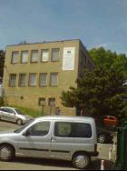
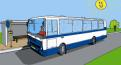

| Kde nás najdete ? V přízemí polikliniky MEDIVITA Hudcova 74a, Brno - Medlánky Objekt polikliniky se nachází v těsné blízkosti vozovny autobusů Dopravního podniku města Brna  |
|
| Spojení ? | ||
| Tramvaj: linka č. | 1 zastávka Hudcova: | |
| Autobus: linka č. | 41 zastávka Vozovna Medlánky: | |
|  | 71 zastávka Vozovna Medlánky: |
|